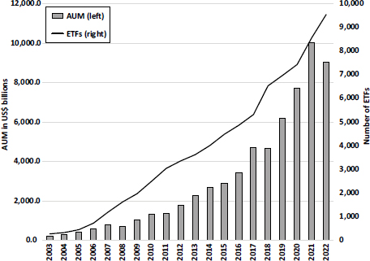
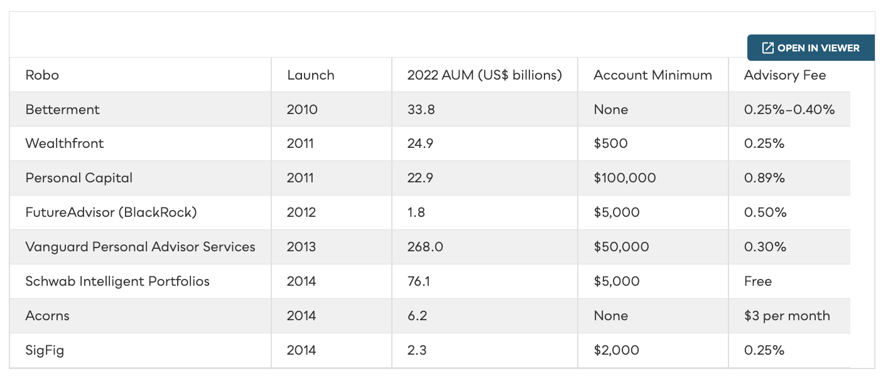
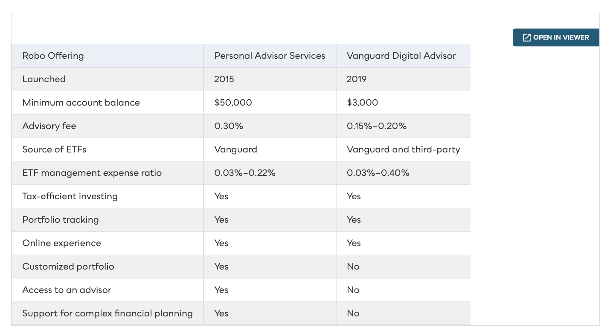
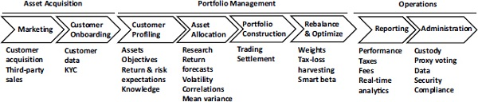
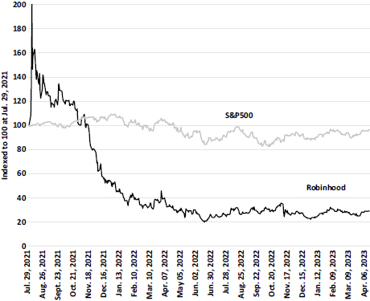

Robo-advisors offer automated online portals that use algorithms to recommend customized portfolios of low-cost ETFs. They emerged in 2008 as a cheap, simple option for investors unwilling to pay an advisor. But low fees, high acquisition costs, low barriers to entry, and fierce competition meant only scale survived — and incumbents had the scale.
You connect over the web or an app, answer questions about goals, return expectations, and risk tolerance. The algorithm maps your answers to a balanced portfolio of low-cost ETFs — more risk or a longer horizon shifts the allocation toward equities.
Modern portfolio theory (Markowitz, Sharpe) made the case for low-cost index investing; Bogle’s Vanguard built the first index fund in 1975 and now runs $8T+ across 422 funds. After 2008’s low rates, investors fixated on fees — and only one-quarter of active funds beat their passive rivals in the decade to 2021. The result: actively managed funds fell from 81% of the market in 2010 to 60% in 2020.

Global ETF assets climbed from $1.3T in 2010 to a record $19T+ by 2025 (ETFGI). In 2024, for the first time ever, US passive funds and ETFs held more assets than active funds — about 53% of all long-term fund assets are now indexed (Morningstar). The shift that began with index mutual funds accelerated through low-cost ETFs — and now through robo-advisors that buy them.
The reason money keeps moving into index ETFs — and the robos that hold them — is performance. Per S&P's SPIVA Year-End 2024 scorecard, 65% of US large-cap active funds trailed the S&P 500 in 2024 alone, and the gap widens with time: 84% over 10 years, 89.5% over 15 years. A low-cost index fund simply delivers the market return minus a few basis points.

Vanguard responded first (2013), Schwab in 2014; by 2016 Bank of America, Capital One, E*Trade, Fidelity, and TD Ameritrade had launched. Christensen’s advice: don’t overreact — improve the core product while spinning up a low-cost division to compete head-on.

Acquisition costs $500+ per new customer in advertising. At a 0.35% fee, a $10,000 account earns just $35/yr — a 14.4-year payback. Even a $50,000 account takes 2.9 years. Incumbents simply cross-sell the service to existing customers for almost nothing.
Rachleff — a VC who taught disruption at Stanford — saw portfolio modeling done in Excel and built software to automate it. After two failed social-investing ideas, the team pivoted to robo-advice and shipped the platform in three months. A questionnaire mapped clients to 1 of 20 risk profiles.
In digital-wealth M&A, the headline multiple is price ÷ AUM. Smaller robo books fetch a far higher price per dollar of assets — buyers pay for the technology, the clients, and the growth curve, not the assets themselves. Against completed deals, UBS's ~5% offer for Wealthfront sat mid-pack — yet it still collapsed when fintech valuations reset in 2022.
| Acquirer → Target | Year | Deal value | AUM at deal | Price / AUM | Target type |
|---|---|---|---|---|---|
| BlackRock → FutureAdvisor | 2015 | $150M | $0.6B | 25.0% | Pure robo |
| JPMorgan → Nutmeg | 2021 | ~$0.97B | ~$4.8B | 20.0% | Pure robo · UK |
| Empower → Personal Capital | 2020 | $825M* | $12.2B | 6.8% | Hybrid robo |
| UBS → WealthfrontTerminated | 2022 | $1.4B | $27B | 5.2% | Pure robo |
| Goldman Sachs → United Capital | 2019 | $750M | $25B | 3.0% | RIA · hybrid |
At ~$1.8T AUM in 2022, robo-advice is under 2% of the $100T wealth management industry. The industry splits into a wholesale side (institutional investors paid on AUM/AUA, fees up to 3.5%) and a retail side (advisors who must be registered — Series 7, CSC, CFA, CFP). AUM vs AUA: under AUM the institution makes the decisions; under AUA it merely holds the assets while the client decides.
Digital wealth management automates standard tasks to lower cost, raise productivity, and improve the customer experience — using the cloud, big data, APIs, AI, blockchain, and cryptography across both B2C and B2B channels.

Grace and Sarta argue the future is a hybrid: algorithms handle onboarding, optimization, and reporting; humans handle life decisions and behavioral coaching. EY calls it “Advisor 2.0.” Many investors — especially retirees and baby boomers — still want to talk to a person.
Most advisors still use paper forms and wet signatures. Up to 15 hours a week is lost to faulty paperwork, compliance, and admin; ~40% of submitted paperwork comes back for corrections, at ~$15/client per month. Onboarding is the worst pain point of all.
Sustainable investing integrates environmental, social, and governance (ESG) factors into asset selection. By 2020 it reached $35.3T — over a third of global AUM and up 54% since 2014. BlackRock found 54% of investors call ESG fundamental and plans to double its sustainable AUM from 18% to 37% by 2025.
Robinhood launched zero-commission trading to democratize finance when discount brokers charged $5–10 a trade — 75% of its first 150K users were born after 1980. Its real revenue was payment for order flow: selling retail trade data to hedge funds.

Robo-advisors were the most visible fintechs in investing, yet most start-ups pivoted to B2B or were acquired; incumbents became fast-followers and captured most of the AUM. The real story is broader: technology is transforming a $100 trillion wealth management industry, with the future settling on a hybrid model — a human advisor supported by algorithms that automate the boring work, lower fees, and improve the customer experience.